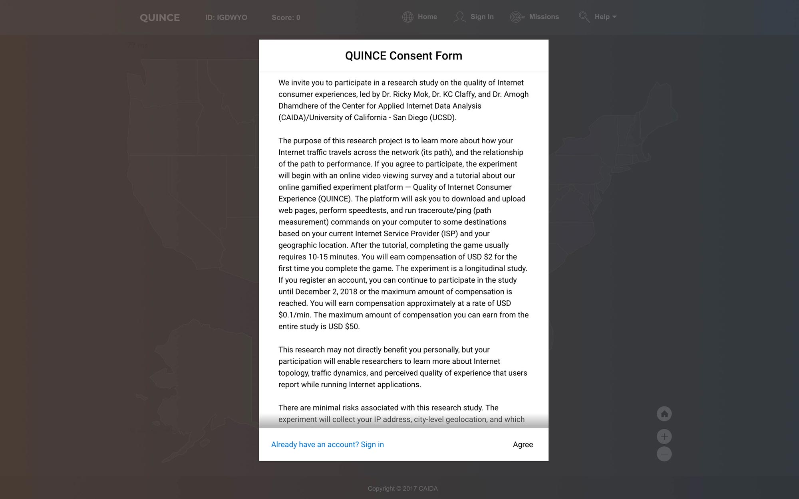
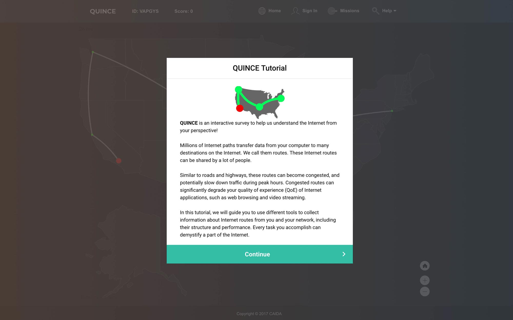
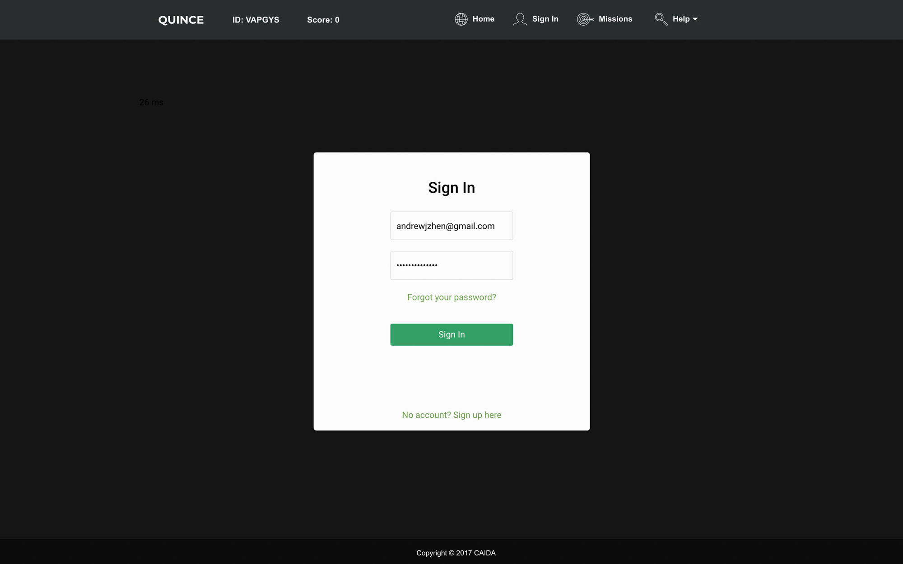

Description
For summer 2018, I served as UX Developer for a web platform called QUINCE, an abbreviation for Quality of Internet Consumer Experience. This platform enables end-users to participate in various Internet measurement tasks which they can accumulate and redeem virtual points for money.
Responsibility
Under the supervision of Ricky, I helped design and develop the web platform to increase participant engagement. Naturally, I spent some time researching effective ways to gamify measurement tasks so that they would appeal more to paricipants. As for the visual side, I worked directly to improve the layout of pages, to enhance visualizations by trying out various icons and images, and to implement interactive elements. I also repaired visual bugs and design breakdowns on the existing platform. Last but not least, I was tasked with visualizing the participants’ measurement results.
Consent Form
The consent form is the first thing participants see when accessing the web platform. I expanded the form vertically to cover a larger area of the screen than before and a gradient shadow was placed at the bottom of the form to indicate the presence of a scroll functionality. At a glance, the consent form is an organized, interactive element that informs participants.
Tutorial Modal
The tutorial modal window introduces participants to the interface and what their tasks are. Originally, the modal was much larger in order to accomodate a bulkier logo and an oversized font. The redesign lessens the font size and inserts paragraph spacing. The logo was replaced by a more appropriate sized one and the Continue button was adjusted to sit flush with the edges of the modal window.
Sign In Page
I designed and implemented the onboarding process that includes the sign-in, sign-up, and forgot-password screens. I also conceptualized this design with the other modal windows in mind. I chose a deep green to symbolize the currency that participants may earn through the web platform and I employed adequate spacing and contrast.
Interactive Map
In order to implement a subtle yet immersive, interactive US map, I dug into amCharts, a JavaScript charting and mapping library, to tweak changes within the code. The result is a seamless experience between interacting with the map and visualizing geographical locations.There's also a home button for those who get a little carried away.
Conclusion and takeaways
The onboarding process was a little tricky because I wanted to dive right in and begin contributing. But instead, I had to take the time to become familiar with Meteor, get certain dependencies installed on my computer, join services for communication with the team and attain access for other privileges.
However, I later realized that good things take time and effort. Progressing through the project and absorbing knowledge from everyone made it all worth the journey. Working closely with researchers in CAIDA and getting valuable experience working with the collected datasets was a privilege. Working in teams definitely helped advance my design and interpersonal skills because of the opportunities to receive feedback on my work that varied from mere conceptual ideas to high-fidelity quality.
Thank you to Ricky for the mentorship and guidance and to Jennifer for the collaboration.